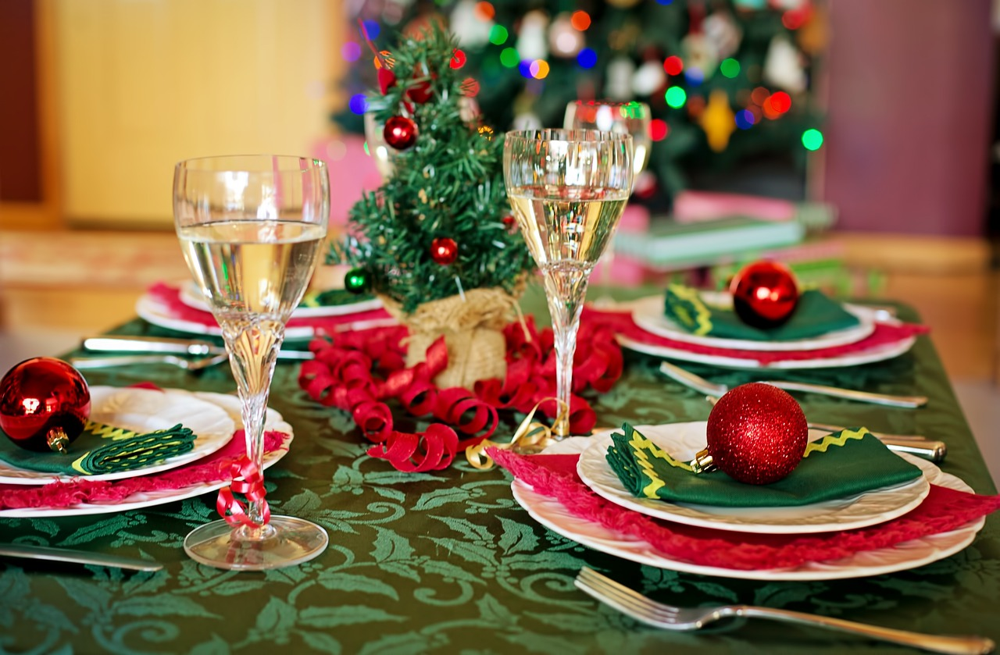

10 Elegant Christmas Decoration Ideas for Your Festive Table
When it comes to holiday decor, the Christmas table is often the centerpiece of any festive gathering. It is where friends and family come together to share a delicious meal and create lasting memories. If you’re looking for inspiration to make your Christmas table truly elegant and unforgettable, you’ve come to the right place. In this blog, we will explore 10 elegant Christmas decoration ideas that will transform your festive table into a winter wonderland. From stunning centerpieces to sparkling table settings, let’s make this holiday season one to remember.
The Significance of an Elegant Christmas Table
Creating an elegant Christmas table goes beyond mere aesthetics. It sets the tone for the entire festive gathering, creating an ambiance of warmth and joy. A beautifully decorated table not only enhances the dining experience but also reflects the care and attention you have put into making the occasion special for your loved ones.
An elegant Christmas table is a visual representation of the time and effort you have invested in creating a memorable celebration. It serves as a conversation starter, a backdrop for heartfelt conversations and laughter that will create lasting memories. Moreover, a beautifully adorned table adds to the excitement and anticipation of the holiday spirit, bringing the magic of Christmas to life.
Stay tuned for the upcoming sections, where we will dive into some exquisite decoration ideas that will transform your festive table into a true winter wonderland.

Idea #1: A Classic White and Gold Theme
When it comes to creating an elegant Christmas table, nothing speaks sophistication quite like a classic white and gold theme. This timeless combination exudes luxury and captures the essence of the holiday season.
Start by laying a crisp white tablecloth as the foundation for your design. Add a touch of opulence with gold metallic accents such as chargers, napkin rings, and candleholders. For a chic centerpiece, opt for a white floral arrangement with hints of gold foliage and delicate fairy lights.
To elevate the aesthetic further, consider incorporating white and gold place settings, complete with porcelain plates and gold-rimmed glassware. Enhance the ambiance by scattering glittering gold confetti or snowflake-shaped table scatter around the table.
A white and gold Christmas table theme is perfect for those who appreciate understated elegance and want to create a sophisticated and memorable dining experience for their guests.
Stay tuned for our next idea, where we will explore a cozy and rustic Christmas table decoration.
Idea #2: A Rustic Farmhouse Charm
Looking to add a cozy and warm ambiance to your Christmas table? Embrace the rustic farmhouse charm for a delightful and nostalgic holiday setting. This theme brings together the natural elements of wood, greenery, and vintage-inspired decor.
Start by covering your table with a burlap or plaid tablecloth to create a rustic foundation. Incorporate wooden accents like rustic candle holders, tree slices as coasters, or even a wooden crate to display your Christmas goodies.
For a charming centerpiece, gather pinecones, evergreen branches, and red berries in a wooden box or mason jars wrapped with twine. Add a touch of whimsy by including miniature vintage-inspired Christmas figurines or antique ornaments.
To complete the look, opt for buffalo plaid or checkered napkins, and consider using mason jars or enamelware for drinkware. Enhance the cozy atmosphere by hanging fairy lights or placing candles in rustic lanterns around the table.
With a rustic farmhouse Christmas table, you'll create a warm and inviting space that will transport your guests to a simpler time.
Stay tuned for our next idea, where we will explore a modern and minimalist Christmas table decoration.
Idea #3: A Sophisticated Silver and Blue Combination
If you're craving an elegant and chic look for your Christmas table, the sophisticated silver and blue combination is the way to go. This color scheme exudes a sense of luxury and adds a touch of frosty glamour to your festive decor.
To achieve this elegant look, start by using a silver or metallic tablecloth as a base. It instantly sets the tone for a glamorous affair. Pair it with blue accents such as sparkling silver or blue placemats, napkins, and runners. Opt for silver chargers and crystal glassware to elevate the sophistication.
For a stunning centerpiece, arrange silver or mercury glass candle holders of varying heights and wrap them with blue ribbon or twine. Surround them with silver or blue ornaments, pinecones, and winter foliage like eucalyptus or cedar for a touch of greenery.
Complete the look by incorporating silver and blue baubles or snowflake-shaped ornaments as place card holders. Add a sprinkle of glitter or faux snow to evoke a snowy winter wonderland.
With a sophisticated silver and blue Christmas table, you'll create an enchanting and glamorous atmosphere that will leave your guests in awe.
Stay tuned for our next idea, where we will explore a traditional and classic Christmas table decoration.
Idea #4: A Whimsical Winter Wonderland
If you're looking to add a touch of magic and playfulness to your festive table, a whimsical winter wonderland theme could be the perfect choice for you. This enchanting theme captures the beauty and wonder of a snowy landscape, creating a magical atmosphere for your Christmas celebrations.
To bring this theme to life, start with a crisp white tablecloth as the base. This will serve as a blank canvas for the whimsical elements you'll add. Incorporate touches of silver, iridescent accents, and soft pastel colors to create a dreamy winter feel.
For the centerpiece, consider using a combination of elements like mini Christmas trees covered in faux snow, sparkling fairy lights, and delicate snowflake decorations. You could also incorporate cute woodland animal figurines or miniature sleighs for a playful touch.
To add a touch of whimsy to each place setting, consider using snowflake-shaped place card holders or personalized ornaments as a thoughtful and festive keepsake for your guests.
With a whimsical winter wonderland theme, your festive table will be transformed into a fairytale setting, creating lasting memories for you and your loved ones.
Stay tuned for our next idea, where we will explore a rustic and nature-inspired Christmas table decoration.
Idea #5: A Glamorous Red and Black Setting
For those who prefer a more dramatic and sophisticated Christmas table setting, a glamorous red and black theme is an excellent choice. This bold and elegant combination will create a striking look that is sure to impress your guests.
To achieve this glamorous setting, begin with a black tablecloth as the foundation. This dark and dramatic backdrop will make the red accents pop. Add touches of red through the use of vibrant red napkins, red chargers, or red floral arrangements.
To bring a touch of sparkle and glamour to the table, incorporate silver or gold accents. Use metallic silver or gold chargers, utensils, or candle holders to add a luxurious touch. You can also consider using glittery ornaments or sequin placements to create a dazzling effect.
For the centerpiece, opt for a statement piece such as a tall, slender vase filled with red roses or red berries. Adorn the vase with a black satin ribbon or a silver bow to tie in the other elements of the table. You can also incorporate black and red ornaments or baubles to add extra elegance.
To complete the look, use black and red place cards adorned with calligraphy or a stylish font. These personalized touches will add a touch of sophistication and make your guests feel extra special.
With a glamorous red and black setting, your Christmas table will exude elegance and style. Stay tuned for our next idea, where we will explore a traditional and cozy Christmas table decoration.
Idea #6: A Natural Greenery and Copper Accents
For a rustic and earthy Christmas table decor, consider a natural greenery and copper accents theme. This combination brings a cozy and inviting feel to your festive setting.
To create this look, start by using a neutral-colored tablecloth or runner as the base. This will provide a clean and simple backdrop for your decorations. Then, incorporate greenery such as eucalyptus, pine branches, or holly leaves as a centerpiece or as scattered accents on the table.
To add a touch of warmth and charm, incorporate copper accents throughout the table. Use copper chargers, utensils, or candle holders to bring a pop of metallic shine. You can also consider adding copper wire fairy lights or copper-colored ornaments to enhance the ambiance.
To complete the natural and rustic feel, use wooden name card holders or tie personalized tags onto small branches. This adds a personal touch and creates a cohesive look.
With a natural greenery and copper accents theme, your Christmas table will exude a warm and welcoming atmosphere. Stay tuned for our next idea, where we will explore a vintage-inspired Christmas table decoration
Idea #7: A Minimalistic and Modern Approach
If you prefer a clean and sleek aesthetic for your Christmas table, a minimalistic and modern approach is the way to go. This style emphasizes simplicity, elegance, and subtle details.
To achieve this look, start with a crisp white tablecloth or runner. This neutral base will create a minimalist backdrop for your decorations. Avoid excessive patterns or prints to maintain the clean and streamlined vibe.
Opt for a simple centerpiece, such as a single clear glass vase with a few branches of baby's breath or white orchids. This will add a touch of freshness and sophistication without overwhelming the table.
To create a modern feel, choose minimalist tableware in neutral colors like black, gray, or silver. Keep the table settings simple and uncluttered, using sleek silverware and crystal-clear glasses. This will create a polished and refined table setting.
Consider using geometric-shaped candle holders or votive holders in metallic finishes like silver or gold to add a modern touch and some gentle ambient lighting.
By adopting a minimalistic and modern approach, your Christmas table will radiate elegance and sophistication. Stay tuned for our next idea, where we will explore a festive and whimsical Christmas table theme.
Idea #8: A Traditional Red and Green Scheme
If you're a fan of classic Christmas colors, a traditional red and green scheme is the perfect choice for your festive table. This timeless combination captures the essence of the holiday season and creates a warm, inviting atmosphere.
Start by using a red tablecloth as the base for your table setting. This vibrant color will immediately set the tone for your theme. Alternatively, you can use a green tablecloth for a more subtle approach.
Add pops of red and green throughout your table with carefully chosen decorations. Consider using red and green plaid or tartan napkins for a touch of nostalgia. Incorporate fresh greenery, such as holly, pine branches, or mistletoe, as a natural centerpiece.
To complement the color scheme, choose tableware in white or gold to create a polished and elegant look. Use red and green accents, such as napkin rings or place cards, to tie everything together.
For an extra festive touch, incorporate Christmas ornaments or small holiday figurines as part of your table decor. This will add a charming and whimsical element to your setting.
A traditional red and green scheme is a classic choice that never goes out of style. Stay tuned for our next idea, where we will explore a rustic and cozy Christmas table theme.